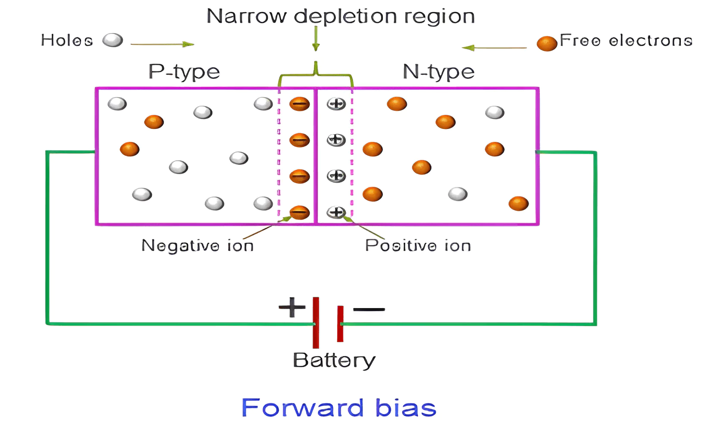
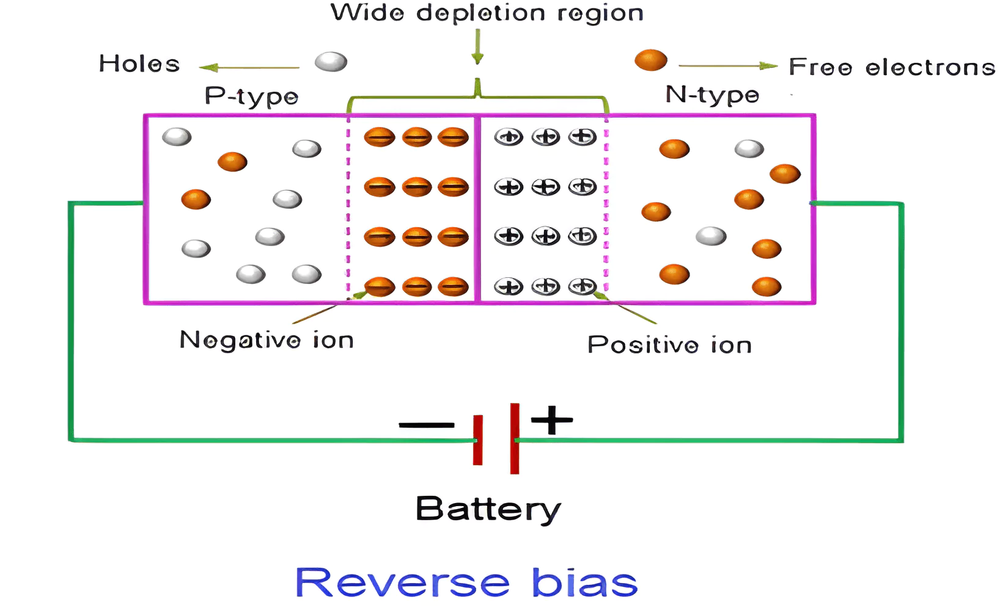
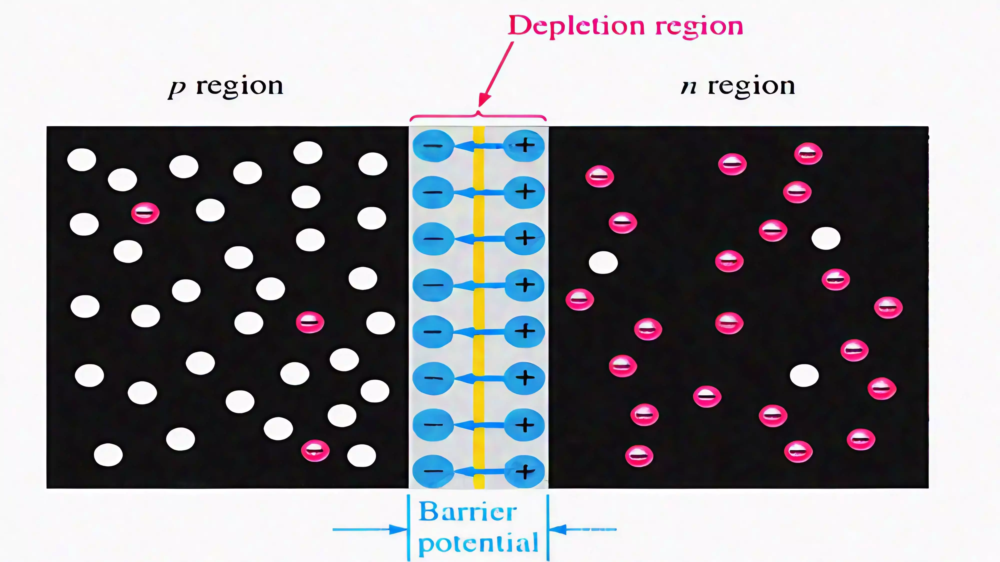
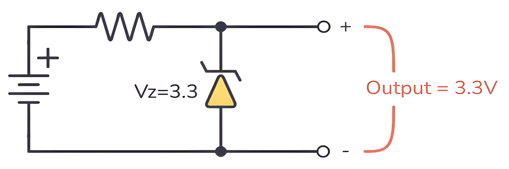

Zener diodes are specially designed to operate in reverse bias, maintaining a stable voltage even when the input fluctuates. This unique property makes them essential for voltage regulation in electronic circuits!
Zener Diode is one of the most important semiconductor diodes used in our daily life. It is a specific diode that works in reverse bias conditions. It allows current to flow from anode to cathode and it also works in the reverse direction. Let’s learn about Zener Diodes their function, and their construction, in detail in this article.
A heavily doped p-n junction diode that works in reverse bias conditions is called a Zener Diode. They are special semiconductor devices that allow the current to flow in both forward and backward directions. For the Zener diode, the voltage drop across the diode is always constant irrespective of the applied voltage. Thus, Zener diodes are used as a voltage regulator.
A Zener diode which is also called a Breakdown diode works in reverse bias conditions. An electrical breakdown occurring in the reverse-biased condition of the PN junction diode is called the Zener effect. In this condition when the electric field increases to a high value it enables the tunnelling of electrons from the valence band to the conduction band of a semiconductor, which suddenly increases the reverse current.
Explore the unique properties of Zener diodes, especially their ability to operate in reverse breakdown mode without damage.
Demonstrate how Zener diodes stabilize voltage across varying input voltages and load conditions.
Plot and interpret the current-voltage (I-V) characteristics of the Zener diode to understand its behavior under forward and reverse bias conditions.
Simulate practical applications, such as voltage clamping, voltage regulation, and overvoltage protection circuits.
Investigate the role of Zener diodes in modern technology, including IoT devices and smart systems.
The Zener Diode operates based on the Zener effect, a quantum mechanical phenomenon discovered by Clarence Melvin Zener. When a high reverse voltage is applied across a heavily doped p-n junction, the intense electric field causes quantum tunneling, allowing electrons to move across the depletion region and creating a controlled breakdown. Unlike regular diodes, which fail under reverse bias, Zener diodes are designed to maintain a stable breakdown voltage, enabling them to regulate voltage and protect circuits from overvoltage conditions. This property makes them essential in voltage regulation, reference voltage generation, and overvoltage protection in electronic systems.
Zener diodes are widely used in electronic circuits due to their ability to maintain a constant voltage, making them ideal for power regulation and voltage stabilization. Their precise breakdown voltage ensures that even with fluctuations in input voltage or load conditions, the output voltage remains stable. This characteristic is particularly useful in protecting sensitive components from voltage spikes and ensuring the reliable operation of power supplies, signal processing circuits, and precision measurement devices. Additionally, Zener diodes can be used in clipping and clamping circuits to shape waveforms and limit voltage levels in communication and signal processing applications.
1934: Discovery of the Zener Effect
1940s: Advancements in Semiconductor Theory
1950s: Invention of the Zener Diode
1960s: Widespread Adoption
1970s: Introduction of Advanced Fabrication Techniques
1980s: Miniaturization and High-Frequency Applications
1990s: Focus on Efficiency and Power Handling
2000s: Integration into Complex Circuits
2010s: Nanoelectronics and IoT Applications
2020s: Future Trends
- Zener diodes stabilize voltage in power supply circuits, ensuring that sensitive devices receive consistent voltage despite fluctuations in input supply.
- Commonly used in AC-to-DC converters and voltage reference circuits.
- Zener diodes help maintain safe voltage levels in lithium-ion and other rechargeable battery packs.
- Used to protect sensitive electronic components from voltage surges by clamping the excess voltage.
- Essential in industrial equipment, where voltage spikes from power grids can damage circuits.
- Zener diodes filter electrical noise and voltage spikes in communication devices such as mobile phones, satellite systems, and IoT devices.
- Reduce unwanted noise in audio systems, enhancing sound quality.
- Zener diodes are integral to solar charge controllers for maintaining voltage levels in photovoltaic systems.
- Used to prevent overcharging of batteries in off-grid solar setups.
- Protect circuit components from voltage spikes caused by sudden changes in wind speed.
- Precise voltage references in quantum computers ensure stable operation of sensitive circuits.
- Used in nanoscale devices for voltage stabilization in ultra-compact systems.
- Stabilize power supplies in AI accelerators and GPUs for consistent performance.
- Zener diodes are typically made from silicon, although some specialized versions use materials like gallium arsenide for unique properties.
- The Zener diode consists of a highly doped p-n junction, which allows it to handle high electric fields without damage.
- The heavy doping reduces the width of the depletion region, enabling the Zener effect at lower breakdown voltages.
- When the anode is connected to a positive voltage and the cathode to a negative voltage:
- The Zener diode behaves like a regular diode, allowing current to flow when the applied voltage exceeds the forward threshold voltage (approximately 0.7V for silicon).
- When the cathode is connected to a positive voltage and the anode to a negative voltage:
- Initially, only a negligible reverse leakage current flows.
- At the Zener breakdown voltage, a significant reverse current begins to flow, regulated by the diode's breakdown mechanism.
| Forward Bias | Reverse Bias |
|---|---|
| 1) The positive terminal of the voltage source is connected to the anode (P-side), and the negative terminal is connected to the cathode (N-side). | 1) The positive terminal of the voltage source is connected to the cathode (N-side), and the negative terminal is connected to the anode (P-side). |
| 2) Current flows from anode to cathode once the threshold voltage is reached. | 2) Ideally, no current flows. A very small leakage current may flow (minority carriers). |
| 3) Requires a minimum voltage to conduct (approximately 0.7V for silicon diodes). | 3) No conduction unless breakdown voltage (Zener voltage) is reached. |
| 4) Behaves like a closed switch, allowing current to flow easily. | 4) Behaves like an open circuit, blocking current under normal conditions. |
| 5) Exponential increase in current as forward voltage increases. | 5) Very small current (leakage current) until breakdown voltage is exceeded. |
| 6) Does not experience breakdown unless there is excessive current or heat. | 6) If reverse voltage exceeds the breakdown voltage (Zener voltage), current may flow. |
| 7) Power is dissipated as heat due to the forward voltage drop (around 0.7V). | 7) Power dissipation is very low unless breakdown occurs. |
8) Applications:
- Rectifiers (AC to DC conversion)
- LEDs (Light Emission)
- Signal Diodes
- Power Supplies
|
8) Applications:
- Blocking Reverse Current
- Zener Diodes for Voltage Regulation
- Protection Circuits
- Photodiodes (Light Detection)
|
|  |  |
- The depletion region is the area near the junction of the p-type and n-type semiconductor materials in a diode.
- In a Zener diode, the depletion region is narrow due to heavy doping on both the p and n sides.
- This narrowness creates a strong electric field even at low reverse voltages.
- Under reverse bias, when the voltage exceeds the Zener breakdown threshold, the high field ionizes atoms, allowing current to flow while maintaining a constant voltage, ideal for regulation.
- The specific reverse voltage at which the Zener diode enters the breakdown region, allowing a stable reverse current to flow.
- It is precisely controlled during manufacturing through doping and can range from as low as 2V to over 200V, depending on the application.
- Zener diodes with lower breakdown voltages [<5V] exhibit sharp breakdown characteristics, while those with higher voltages exhibit a softer curve.
- The breakdown voltage varies slightly with temperature, which can be positive or negative depending on the Zener voltage.
- The breakdown voltage is influenced by temperature changes, expressed in mV/°C.
- For Zener diodes with a breakdown voltage below 5V, the coefficient is typically negative, meaning Vz decreases with temperature.
- For Zener diodes above 5V, the coefficient is usually positive, meaning Vz increases with temperature.
- At around 5.6V, the coefficient is near zero, making it ideal for temperature-stable applications.
- Represents the dynamic resistance of the diode in the breakdown region, measured in ohms (Ω).
- Lower impedance indicates better regulation and less variation in output voltage with changes in current.
- The maximum power the Zener diode can dissipate without damage, expressed in watts (W).
- It is calculated as [ P = Vz * Iz ], where Iz is the Zener Current.
- Exceeding the power rating can overheat the diode, leading to failure.
- A small current that flows in the reverse direction when the applied voltage is below the breakdown voltage.
- It is usually in the nanoampere (nA) range but increases with higher temperatures.
- Defines the range of currents (typically mA to several amps) the Zener diode can safely conduct while maintaining a stable voltage.
- Minimum current (Izk) is required to keep the diode in the breakdown region.
1. Zener Voltage (Vz): The reverse voltage at which the diode enters the breakdown region.
2. Maximum Power Dissipation (Pz): The maximum power the diode can handle without damage.
3. Zener Current (Iz): The current range (minimum and maximum) for stable operation in the breakdown region.
4. Reverse Leakage Current (Ir): The small current flowing in reverse bias below the Zener voltage.
5. Temperature Coefficient: The rate of change in Zener voltage with temperature, affecting precision.
6. Dynamic Resistance (Rz): The small resistance in the breakdown region, influencing voltage stability.
7. Forward Voltage (Vf): Voltage needed for forward bias operation, typically 0.7V for silicon.
- When the anode is connected to a positive voltage and the cathode to a negative voltage, the Zener diode behaves like a regular diode.
- The current flows when the forward voltage exceeds the threshold (~0.7V for a silicon diode).
- In this mode, it behaves like a regular diode and allows current to pass in the forward direction.
- In reverse bias (when the cathode is connected to a positive voltage and the anode to a negative voltage), the Zener diode initially behaves like an open circuit and only a very small leakage current flows.
- In low-voltage Zener diodes (typically under 5V), the Zener breakdown occurs due to quantum tunneling. The strong electric field in the depletion region allows electrons to "tunnel" through the barrier and start conducting in the reverse direction.
- This results in a stable reverse current even with increasing reverse voltage, maintaining a constant voltage (Zener voltage).
Avalanche Effect:
- In high-voltage Zener diodes (typically above 5V), the breakdown occurs through avalanche multiplication.
- High-energy electrons collide with atoms in the diode’s material, knocking out more electrons and creating a chain reaction, allowing current to flow in the reverse direction.
- This breakdown mechanism results in a stable reverse current with a voltage drop (Zener voltage) that is relatively constant.
- Once the diode enters the breakdown region, the voltage across the Zener diode remains constant at the Zener voltage, regardless of variations in the input voltage or load current.
- This property is essential for voltage regulation, where the Zener diode ensures a steady output voltage by absorbing excess voltage when needed.
- A Zener diode is widely used as a voltage regulator due to its ability to maintain a constant output voltage despite variations in input voltage or load current.
- In reverse bias, when the voltage across the Zener diode reaches its breakdown voltage (Vz), it begins to conduct current without being damaged.
- At this point, the voltage across the Zener diode remains constant at Vz, irrespective of further increases in the input voltage or variations in load resistance.
- This characteristic makes the Zener diode ideal for maintaining a stable output voltage.
| Avalanche Breakdown | Zener Breakdown |
|---|---|
| 1) Avalanche breakdown occurs when the high voltage increase the free electron in the semiconductor and a sudden increase in current is seen. | 1) Zener breakdown happens when electrons from the valance band gain energy and reaches the conduction band which then conducts electricity. |
| 2) Avalanche breakdown is seen in the diodes having breakdown voltage greater than 8 volts. | 2) Zener breakdown is seen in the diodes having breakdown voltage in the range of 5 to 8 volts. |
| 3) Avalanche breakdown is observed in diodes that are lightly doped. | 3) Zener breakdown is observed in diodes that are highly doped. |
| 4) In the Avalanche breakdown, the VI characteristics curve is not as sharp as the VI characteristics curve in the Zener breakdown. | 4) Zener Breakdown has a sharp VI characteristics curve. |
| 5) For Avalanche breakdown increase in temperature increases the breakdown voltage. | 5) For Zener breakdown increase in temperature decreases the breakdown voltage. |
- Zener diodes provide stable voltage regulation in both forward and reverse bias, especially in low-power applications.
- Zener diodes are inexpensive and widely available, making them an accessible choice for many electronic designs.
- Zener diodes are small and lightweight, which makes them suitable for applications where space is limited.
- Zener diodes are widely used to protect circuits from voltage surges and spikes, especially from power transients or lightning strikes.
- Zener diodes operate efficiently with low power consumption, especially in low-power applications.
- Zener diodes come in a wide range of Zener voltages, making them suitable for a variety of applications.
- Zener diodes offer good temperature stability, especially when used for voltage reference and regulation in circuits that experience varying temperatures.
- Zener diodes have a simple breakdown mechanism, involving either Zener breakdown (for lower voltage) or avalanche breakdown (for higher voltage).
- Zener diodes are not capable of handling high power levels.
- Zener diodes tend to be inefficient when regulating voltage in circuits with high current requirements.
- Zener diodes exhibit a temperature dependence that can affect their performance.
- Zener diodes are typically only effective for low-voltage regulation.
- Zener diodes exhibit reverse leakage current even when they are not in breakdown mode.
- As the reverse voltage increases beyond the Zener voltage, the diode becomes less effective in regulating voltage.
- Zener diodes do not respond instantaneously to rapid changes in input voltage.
- Zener diodes are not suitable for amplification purposes because they function primarily as voltage regulators and clippers.
- Zener diodes are used in LED circuits to ensure a constant voltage is supplied to the LED regardless of the power supply fluctuations.
- Zener diodes are used as voltage references in analog-to-digital converters (ADC) and digital-to-analog converters (DAC).
- Zener diodes are used to regulate the charging voltage in battery charging circuits.
- Zener diodes are used in circuits that require temperature compensation for stable operation.
- Researchers are exploring new semiconductor materials to improve the performance of Zener diodes.
- Zener diodes could be integrated into advanced power management systems to enhance efficiency and power regulation in modern electronic devices.
- The development of hybrid circuits combining Zener diodes with transistors, voltage regulators, or field-effect transistors (FETs) to improve overall performance.
- Development of smart Zener diodes with built-in feedback systems to monitor and adapt their performance in real-time.
- Zener diodes will continue to play a significant role in solar power and wind energy systems.
- As electronic devices continue to evolve, there is increasing demand for high-speed circuits and high-frequency applications, such as 5G technology and high-frequency communication systems.
- Zener diodes are likely to become even more miniaturized to fit into small electronic devices such as wearables, smartphones, and other portable electronics.
- Zener diodes will continue to play a role in the protection and regulation of voltage in space exploration and satellite systems.
Zener diodes are essential components in modern electronics, primarily used for voltage regulation and protection against over-voltage conditions. They have evolved from simple devices to critical elements in high-performance circuits. With advancements in materials like silicon carbide (SiC) and gallium nitride (GaN), Zener diodes are becoming more efficient and capable of handling higher power and temperatures.
Looking ahead, Zener diodes will continue to play a significant role in diverse applications, including renewable energy systems, consumer electronics, high-frequency circuits, and space exploration. Their ability to adapt to evolving technology makes them indispensable for voltage regulation, ensuring the reliability and protection of sensitive electronic systems. As technology advances, Zener diodes will remain crucial for future innovations in various fields.